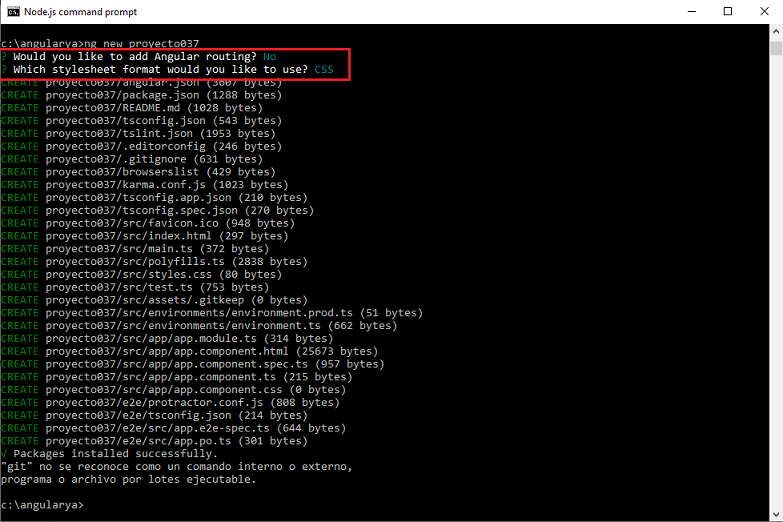
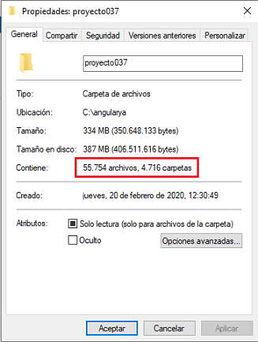
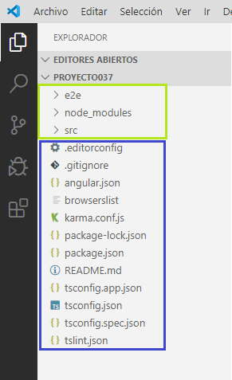

Hemos trabajado por un tiempo desarrollando ejercicios con el framework de Angular, pero no nos hemos detenido para analizar en profundidad los archivos y carpetas que se generan cada vez que creamos un proyecto.
Pana analizar los archivos y carpetas creeemos un nuevo proyecto:
ng new proyecto037
Lo primero que puede variar esta estructura son que decisiones tomamos para indicar si queremos utilizar routing y el tipo de archivo para las hojas de estilo (seleccionemos los datos por defecto):
Si analizamos el contenido de la carpeta que se crea 'proyecto037' nos puede intimidar la cantidad de carpetas y archivos que contiene:
La carpeta 'proyecto037' creada con Angular 9 tiene 12 archivos y 3 carpetas:
.editorconfig Este archivo define estilos de codificación consistentes para múltiples desarrolladores que trabajan en el mismo proyecto con editores de texto distinto. No hay problemas de estilo si un desarrollador utiliza el VS Code y otro el Sublime Text, ya que ambos editores tomarán en cuenta las definiciones contenidas en .editorconfig:
# Editor configuration, see https://editorconfig.org root = true [*] charset = utf-8 indent_style = space indent_size = 2 insert_final_newline = true trim_trailing_whitespace = true [*.md] max_line_length = off trim_trailing_whitespace = false
Para modificar este archivo podemos consultar el sitio que define su estándar editorconfig.org
.gitignore Especifica los archivo y carpetas que debe ignorar el sistema de control de versiones (Git)
# See http://help.github.com/ignore-files/ for more about ignoring files. # compiled output /dist /tmp /out-tsc # Only exists if Bazel was run /bazel-out # dependencies /node_modules # profiling files chrome-profiler-events*.json speed-measure-plugin*.json # IDEs and editors /.idea .project .classpath .c9/ *.launch .settings/ *.sublime-workspace # IDE - VSCode .vscode/* !.vscode/settings.json !.vscode/tasks.json !.vscode/launch.json !.vscode/extensions.json .history/* # misc /.sass-cache /connect.lock /coverage /libpeerconnection.log npm-debug.log yarn-error.log testem.log /typings # System Files .DS_Store Thumbs.db
angular.json Se definen valores por defecto para la configuración del proyecto para las herramientas de compilación y desarrollo:
{
"$schema": "./node_modules/@angular/cli/lib/config/schema.json",
"version": 1,
"newProjectRoot": "projects",
"projects": {
"proyecto037": {
"projectType": "application",
"schematics": {},
"root": "",
"sourceRoot": "src",
"prefix": "app",
"architect": {
"build": {
"builder": "@angular-devkit/build-angular:browser",
"options": {
"outputPath": "dist/proyecto037",
"index": "src/index.html",
"main": "src/main.ts",
"polyfills": "src/polyfills.ts",
"tsConfig": "tsconfig.app.json",
"aot": true,
"assets": [
"src/favicon.ico",
"src/assets"
],
"styles": [
"src/styles.css"
],
"scripts": []
},
"configurations": {
"production": {
"fileReplacements": [
{
"replace": "src/environments/environment.ts",
"with": "src/environments/environment.prod.ts"
}
],
"optimization": true,
"outputHashing": "all",
"sourceMap": false,
"extractCss": true,
"namedChunks": false,
"extractLicenses": true,
"vendorChunk": false,
"buildOptimizer": true,
"budgets": [
{
"type": "initial",
"maximumWarning": "2mb",
"maximumError": "5mb"
},
{
"type": "anyComponentStyle",
"maximumWarning": "6kb",
"maximumError": "10kb"
}
]
}
}
},
"serve": {
"builder": "@angular-devkit/build-angular:dev-server",
"options": {
"browserTarget": "proyecto037:build"
},
"configurations": {
"production": {
"browserTarget": "proyecto037:build:production"
}
}
},
"extract-i18n": {
"builder": "@angular-devkit/build-angular:extract-i18n",
"options": {
"browserTarget": "proyecto037:build"
}
},
"test": {
"builder": "@angular-devkit/build-angular:karma",
"options": {
"main": "src/test.ts",
"polyfills": "src/polyfills.ts",
"tsConfig": "tsconfig.spec.json",
"karmaConfig": "karma.conf.js",
"assets": [
"src/favicon.ico",
"src/assets"
],
"styles": [
"src/styles.css"
],
"scripts": []
}
},
"lint": {
"builder": "@angular-devkit/build-angular:tslint",
"options": {
"tsConfig": [
"tsconfig.app.json",
"tsconfig.spec.json",
"e2e/tsconfig.json"
],
"exclude": [
"**/node_modules/**"
]
}
},
"e2e": {
"builder": "@angular-devkit/build-angular:protractor",
"options": {
"protractorConfig": "e2e/protractor.conf.js",
"devServerTarget": "proyecto037:serve"
},
"configurations": {
"production": {
"devServerTarget": "proyecto037:serve:production"
}
}
}
}
}},
"defaultProject": "proyecto037"
}
"prefix": "app"
"prefix" es una cadena que Angular antepone a los selectores generados. Por ejemplo la componente por defecto que se crea:
@Component({
selector: 'app-root',
templateUrl: './app.component.html',
styleUrls: ['./app.component.css']
})
export class AppComponent {
title = 'proyecto037';
}
Si creamos una componente llamada 'dado' luego su selector toma el nombre 'app-dado':
@Component({
selector: 'app-dado',
templateUrl: './dado.component.html',
styleUrls: ['./dado.component.css']
})
La carpeta raíz para los archivos fuente del proyecto esta definido en:
"sourceRoot": "src"
En la entrada "assets" hacemos referencia a los archivos estáticos del proyecto y las carpetas donde se almacenan, recordemos en el problema donde necesitabamos insertar archivos *.jpg los cargamos en la carpeta 'assets':
"assets": [
"src/favicon.ico",
"src/assets"
],
En la entrada styles especificamos todos los archivos de hoja de estilo globales al proyecto (styles.css es uno que se ha creado por defecto):
"styles": [
"src/styles.css"
],
Por ejemplo si queremos tener acceso solo a la hoja de estilo de BootStrap 'bootstrap.min.css', solo debemos copiar dicho archivo en la carpeta 'src' o una subcarpeta de la misma y especificar su path:
"styles": [
"src/styles.css",
"src/bootstrap.min.css"
],
En la entrada scripts especificamos los archivos de script JavaScript para agregar al contexto global del proyecto:
"scripts": []
Por ejemplo si queremos tener acceso al archivo JavaScript de BootStrap 'bootstrap.min.js', debemos copiar dicho archivo y el jquery en la carpeta 'src' o una subcarpeta de la misma y especificar su path:
"scripts": ["src/jquery-3.4.1.min.js",
"src/bootstrap.min.js"]
El orden en que los listamos es importante, primero debe ser el jquery y seguidamente el bootstrap.min.js (según sus dependencias, en este caso BootStrap depende de la librería JQuery)
package.json Configura las dependencias del paquete npm que están disponibles para todos los proyectos en el espacio de trabajo.
{
"name": "proyecto037",
"version": "0.0.0",
"scripts": {
"ng": "ng",
"start": "ng serve",
"build": "ng build",
"test": "ng test",
"lint": "ng lint",
"e2e": "ng e2e"
},
"private": true,
"dependencies": {
"@angular/animations": "~9.0.0",
"@angular/common": "~9.0.0",
"@angular/compiler": "~9.0.0",
"@angular/core": "~9.0.0",
"@angular/forms": "~9.0.0",
"@angular/platform-browser": "~9.0.0",
"@angular/platform-browser-dynamic": "~9.0.0",
"@angular/router": "~9.0.0",
"rxjs": "~6.5.4",
"tslib": "^1.10.0",
"zone.js": "~0.10.2"
},
"devDependencies": {
"@angular-devkit/build-angular": "~0.900.1",
"@angular/cli": "~9.0.1",
"@angular/compiler-cli": "~9.0.0",
"@angular/language-service": "~9.0.0",
"@types/node": "^12.11.1",
"@types/jasmine": "~3.5.0",
"@types/jasminewd2": "~2.0.3",
"codelyzer": "^5.1.2",
"jasmine-core": "~3.5.0",
"jasmine-spec-reporter": "~4.2.1",
"karma": "~4.3.0",
"karma-chrome-launcher": "~3.1.0",
"karma-coverage-istanbul-reporter": "~2.1.0",
"karma-jasmine": "~2.0.1",
"karma-jasmine-html-reporter": "^1.4.2",
"protractor": "~5.4.3",
"ts-node": "~8.3.0",
"tslint": "~5.18.0",
"typescript": "~3.7.5"
}
}
El archivo se organiza indicando primero en la propiedad "dependencies" todos los paquetes requeridos para la aplicación que estamos desarrollando, y en segundo lugar en la propiedad "devDepencencies" se hace referencia a todos los paquetes requeridos para desarrollar la aplicación.
Los paquetes que se declaran en el archivo corresponden a:
Paquetes de Angular: núcleo angular y módulos opcionales; comienzan los nombres de sus paquetes @angular/
Paquetes de soporte : bibliotecas de terceros que deben estar presentes para que se ejecuten las aplicaciones de Angular
Paquetes Polyfill : Polyfills tapan huecos en la implementación de JavaScript que no disponen algunos navegadores.
browserslist El sistema de compilación de Angular utiliza este archivo para ajustar la salida de CSS y JS para admitir los navegadores especificados.
# This file is used by the build system to adjust CSS and JS output to support the specified browsers below. # For additional information regarding the format and rule options, please see: # https://github.com/browserslist/browserslist#queries # You can see what browsers were selected by your queries by running: # npx browserslist > 0.5% last 2 versions Firefox ESR not dead not IE 9-11 # For IE 9-11 support, remove 'not'.
karma.conf.js Karma es una herramienta simple que le permite ejecutar código JavaScript en múltiples navegadores reales (escritorio, móvil, tabletas, etc.) El objetivo principal de Karma es brindar un entorno de prueba productivo para los desarrolladores.
// Karma configuration file, see link for more information
// https://karma-runner.github.io/1.0/config/configuration-file.html
module.exports = function (config) {
config.set({
basePath: '',
frameworks: ['jasmine', '@angular-devkit/build-angular'],
plugins: [
require('karma-jasmine'),
require('karma-chrome-launcher'),
require('karma-jasmine-html-reporter'),
require('karma-coverage-istanbul-reporter'),
require('@angular-devkit/build-angular/plugins/karma')
],
client: {
clearContext: false // leave Jasmine Spec Runner output visible in browser
},
coverageIstanbulReporter: {
dir: require('path').join(__dirname, './coverage/proyecto037'),
reports: ['html', 'lcovonly', 'text-summary'],
fixWebpackSourcePaths: true
},
reporters: ['progress', 'kjhtml'],
port: 9876,
colors: true,
logLevel: config.LOG_INFO,
autoWatch: true,
browsers: ['Chrome'],
singleRun: false,
restartOnFileChange: true
});
};
package-lock.json Proporciona información de versión para todos los paquetes instalados en la carpeta node_modules por el cliente npm (no lo mostramos ya que tiene más de 13000 líneas)
tsconfig.json Especifica la configuración predeterminada del lenguaje TypeScript para proyectos en el espacio de trabajo.
{
"compileOnSave": false,
"compilerOptions": {
"baseUrl": "./",
"outDir": "./dist/out-tsc",
"sourceMap": true,
"declaration": false,
"downlevelIteration": true,
"experimentalDecorators": true,
"module": "esnext",
"moduleResolution": "node",
"importHelpers": true,
"target": "es2015",
"typeRoots": [
"node_modules/@types"
],
"lib": [
"es2018",
"dom"
]
},
"angularCompilerOptions": {
"fullTemplateTypeCheck": true,
"strictInjectionParameters": true
}
}
tsconfig.spec.json Configuración de TypeScript para las pruebas de aplicación.
{
"extends": "./tsconfig.json",
"compilerOptions": {
"outDir": "./out-tsc/spec",
"types": [
"jasmine",
"node"
]
},
"files": [
"src/test.ts",
"src/polyfills.ts"
],
"include": [
"src/**/*.spec.ts",
"src/**/*.d.ts"
]
}
tslint.json Archivo de configuración de la herramienta TSLint (TSLint es una herramienta de análisis estático que comprueba el código TypeScript en busca de errores de legibilidad, mantenibilidad y funcionalidad.)
{
"extends": "tslint:recommended",
"rules": {
"array-type": false,
"arrow-parens": false,
"deprecation": {
"severity": "warning"
},
"component-class-suffix": true,
"contextual-lifecycle": true,
"directive-class-suffix": true,
"directive-selector": [
true,
"attribute",
"app",
"camelCase"
],
"component-selector": [
true,
"element",
"app",
"kebab-case"
],
"import-blacklist": [
true,
"rxjs/Rx"
],
"interface-name": false,
"max-classes-per-file": false,
"max-line-length": [
true,
140
],
"member-access": false,
"member-ordering": [
true,
{
"order": [
"static-field",
"instance-field",
"static-method",
"instance-method"
]
}
],
"no-consecutive-blank-lines": false,
"no-console": [
true,
"debug",
"info",
"time",
"timeEnd",
"trace"
],
"no-empty": false,
"no-inferrable-types": [
true,
"ignore-params"
],
"no-non-null-assertion": true,
"no-redundant-jsdoc": true,
"no-switch-case-fall-through": true,
"no-var-requires": false,
"object-literal-key-quotes": [
true,
"as-needed"
],
"object-literal-sort-keys": false,
"ordered-imports": false,
"quotemark": [
true,
"single"
],
"trailing-comma": false,
"no-conflicting-lifecycle": true,
"no-host-metadata-property": true,
"no-input-rename": true,
"no-inputs-metadata-property": true,
"no-output-native": true,
"no-output-on-prefix": true,
"no-output-rename": true,
"no-outputs-metadata-property": true,
"template-banana-in-box": true,
"template-no-negated-async": true,
"use-lifecycle-interface": true,
"use-pipe-transform-interface": true
},
"rulesDirectory": [
"codelyzer"
]
}
tsconfig.app.json Configuración de TypeScript específica de la aplicación , incluidas las opciones de compilación de plantillas de TypeScript y Angular.
{
"extends": "./tsconfig.json",
"compilerOptions": {
"outDir": "./out-tsc/app",
"types": []
},
"files": [
"src/main.ts",
"src/polyfills.ts"
],
"include": [
"src/**/*.d.ts"
]
}
README.md Primer archivo que deberíamos leer cuando accedemos a un proyecto nuevo.
# Proyecto037 This project was generated with [Angular CLI](https://github.com/angular/angular-cli) version 9.0.1. ## Development server Run `ng serve` for a dev server. Navigate to `http://localhost:4200/`. The app will automatically reload if you change any of the source files. ## Code scaffolding Run `ng generate component component-name` to generate a new component. You can also use `ng generate directive|pipe|service|class|guard|interface|enum|module`. ## Build Run `ng build` to build the project. The build artifacts will be stored in the `dist/` directory. Use the `--prod` flag for a production build. ## Running unit tests Run `ng test` to execute the unit tests via [Karma](https://karma-runner.github.io). ## Running end-to-end tests Run `ng e2e` to execute the end-to-end tests via [Protractor](http://www.protractortest.org/). ## Further help To get more help on the Angular CLI use `ng help` or go check out the [Angular CLI README](https://github.com/angular/angular-cli/blob/master/README.md).